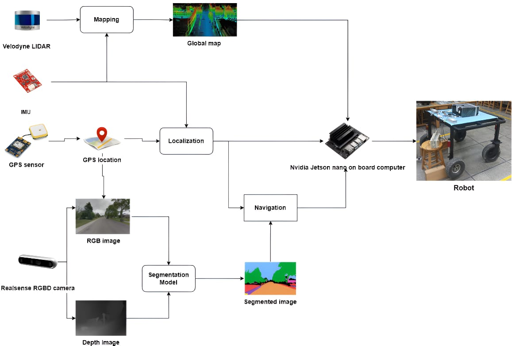

AI-Powered Autonomous Delivery Vehicle
Built a campus delivery rover with GPS graph planning, 3D LiDAR mapping, fused wheel and IMU odometry, heading estimation, and local obstacle avoidance in ROS.
Deployed real-time road segmentation on an NVIDIA Jetson Nano with TensorRT. The system received the LUMS Electrical Engineering Department's Best Final Year Project 2024 award.
Read the project case study